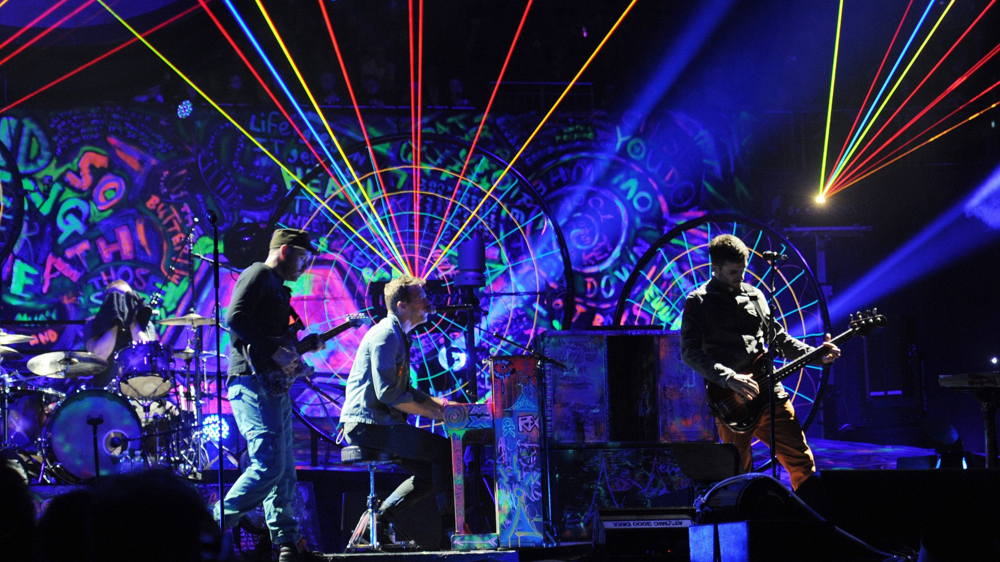

Coldplay is een Britse rockband, die in 1996 in Londen werd gevormd.
De leden zijn zanger Chris Martin, gitarist Jon Buckland, drummer
Will Champion en bassist Guy Berryman.
In het begin werd Coldplay vergeleken met andere artiesten en bands,
waaronder Radiohead, U2 en Travis. De band brak met de single Yellow door,
gevolgd door hun debuutalbum Parachutes (2000).
A Rush of Blood to the Head (2002), het tweede album,
betekende hun definitieve doorbraak. Het album won ook meerdere prijzen.
In 2005 kwam het album X&Y, dat in zestien landen op nummer één kwam.
Het vierde album, Viva la Vida or Death and All His Friends, werd samen met
Brian Eno geproduceerd en ontving meerdere Grammy's.
Hun vijfde album Mylo Xyloto is weer geproduceerd door Eno.
Hits van Coldplay zijn onder meer Speed of Sound, Clocks, Yellow, Viva la Vida,
The Scientist, Fix You, Paradise en Magic.